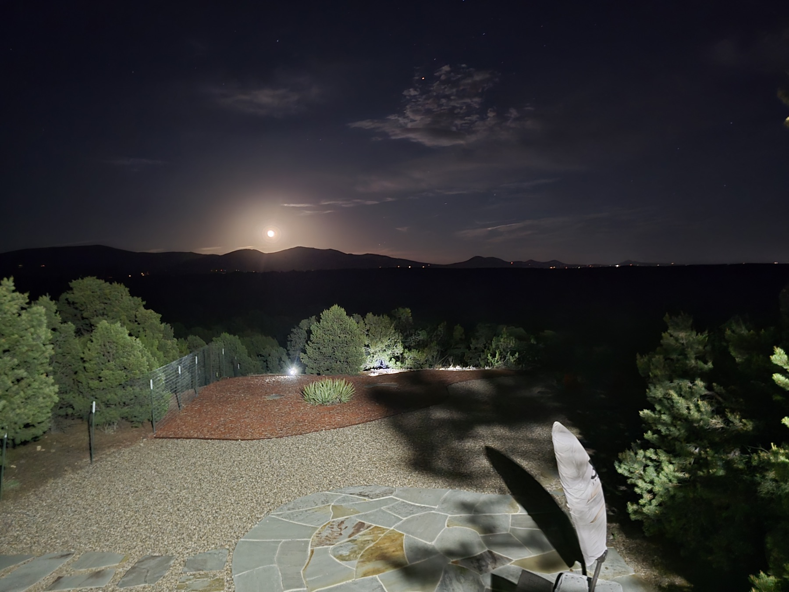

Photography · © Griffin Rutherford
Moonlit Patio Vista
June 1, 2026
Interested in a print? griffinkrutherford@gmail.com for purchasing inquiries.

Photography · © Griffin Rutherford
June 1, 2026
Interested in a print? griffinkrutherford@gmail.com for purchasing inquiries.